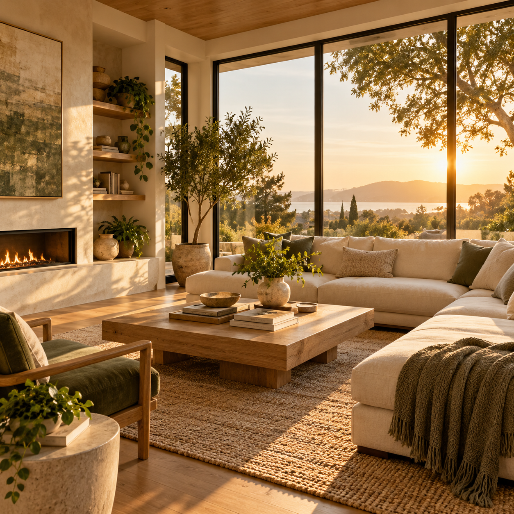

00:05
COMFYUI LOCAL CREATIVE STUDIO
让创意
更简单更强大
基于 ComfyUI 的本地 AI 创作平台
支持图片、视频与可视化工作流
灵感 gallery
从本地生成记录中继续创作
00:08
00:04
00:06

00:0500:06
LOCAL LIBRARY
Recipe 与工作流
候选 Recipe
输入任务后生成本地推荐。
内置模板
正在读取模板…
QUEUE
任务中心
正在读取任务…
PROJECTS
项目归档
暂无项目。
QUICK CANVAS
快速画布
MODEL CATALOG
模型目录
正在读取模型目录…
RUNTIME
本地环境
正在读取环境诊断…